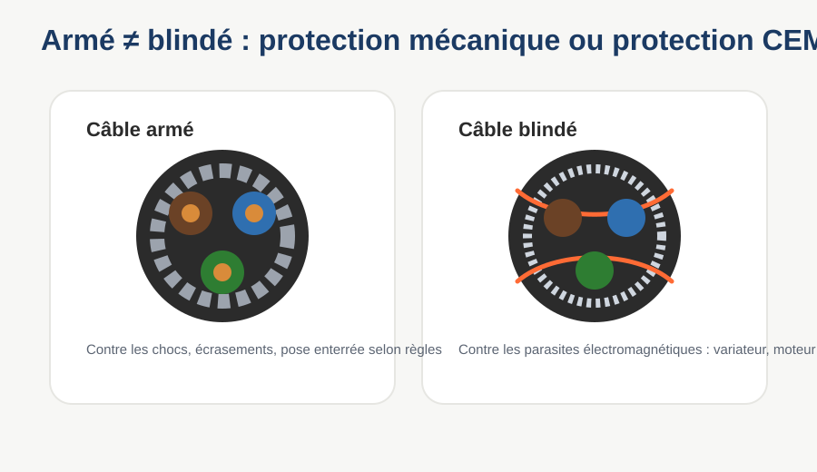
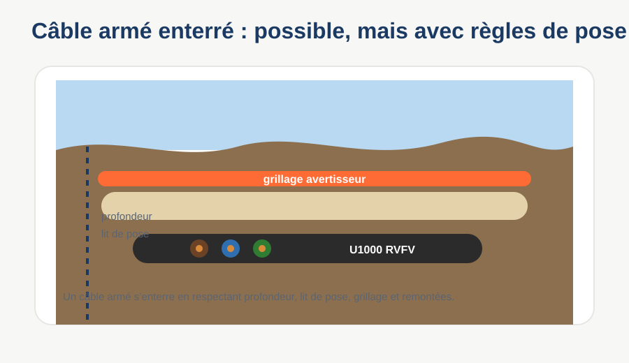
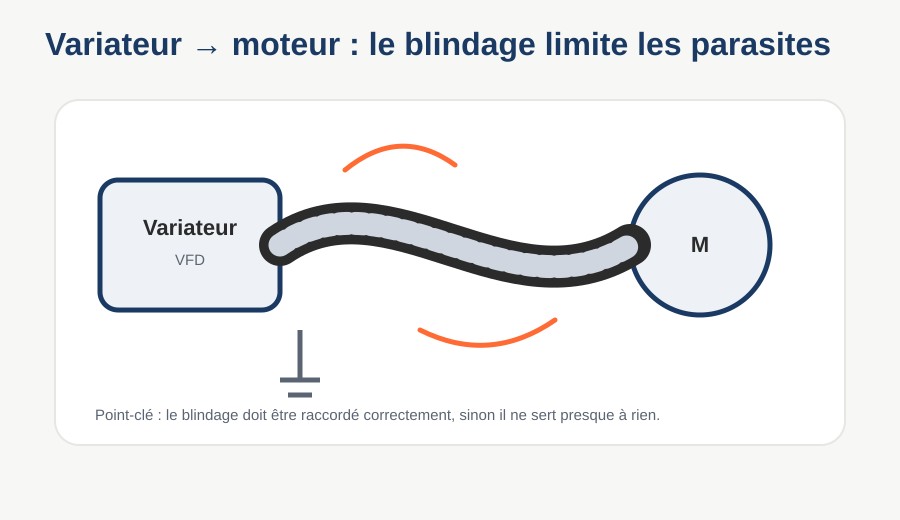
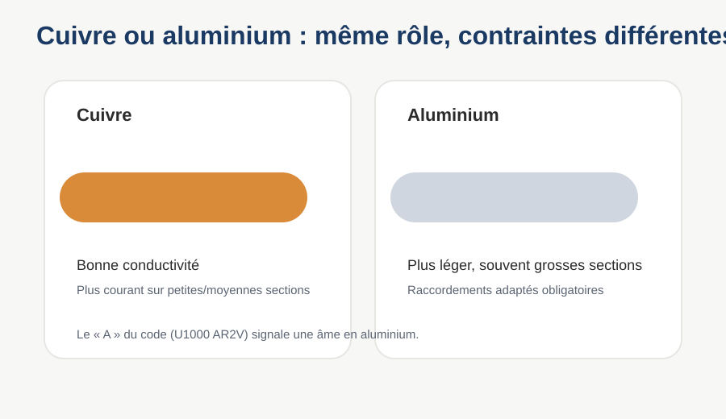
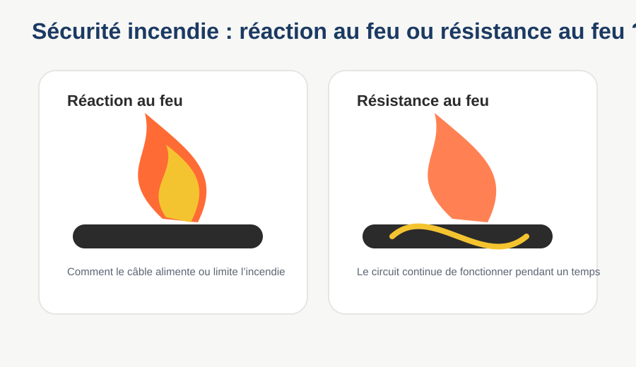
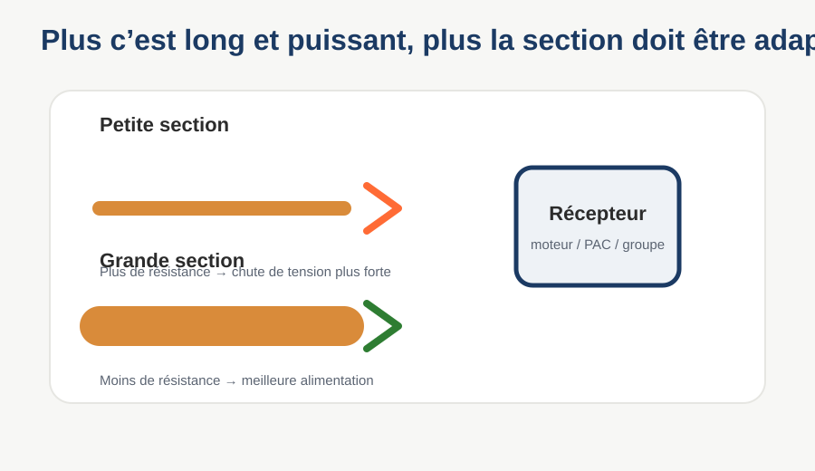
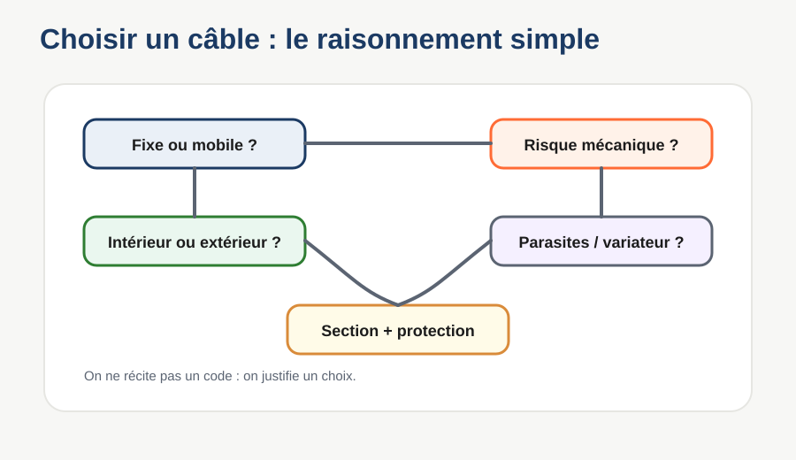

Câbles armés, blindés, aluminium, sécurité incendie — et les sections.
TD 3 sur 3 — durée indicative : 1h
Avant de commencer
Dans les TD1 et TD2, tu as vu les câbles et les fils qu'on croise tous les jours. Ce TD3 couvre des cas plus particuliers, mais que tu rencontreras vraiment sur le terrain :
Un câble armé et un câble blindé, ce n'est pas la même chose,
Pourquoi certains câbles sont en aluminium,
Pourquoi certains circuits ont besoin d'un câble anti-incendie,
Comment raisonner sur la grosseur d'un câble.
À savoir : il existe des milliers de câbles dans le métier — ce TD ne les couvre pas tous, mais te donne la logique pour comprendre les autres le jour où tu les croiseras.
Choisis ton niveau
1. Armé ou blindé ? Ce n'est pas pareil
Ces deux mots sont souvent confondus. Pourtant ils protègent contre des choses complètement différentes :
Armé
Blindé
Protège contre
les chocs, l'écrasement
les perturbations électriques
Comment
un feuillard d'acier autour de la gaine
une tresse ou un écran de cuivre relié à la terre
Exemple
câble enterré directement en pleine terre
liaison entre un variateur de vitesse et un moteur
Un câble armé ne protège pas des perturbations électriques, et un câble blindé ne protège pas forcément des chocs. Confondre les deux peut coûter cher sur un chantier.
À retenir simplement : un câble armé protège surtout contre les agressions mécaniques ; un câble blindé protège surtout contre les perturbations électromagnétiques. Ce n'est pas le même problème, ce n'est pas le même choix technique.

Armé = protection mécanique. Blindé = protection contre les parasites électromagnétiques.
👀 U1000 RVFV — le câble armé
Norme NF C 32-322 · version armée du U1000 R2V
L'anneau pointillé gris = le feuillard d'acier (l'armure), entre la gaine intérieure et la gaine extérieure.
Usage : c'est un câble armé prévu pour les installations fixes. Il peut être posé en enterré direct lorsque les règles de pose sont respectées : profondeur adaptée, lit de pose, grillage avertisseur, protection mécanique aux remontées et absence de contrainte particulière non prévue. On l'utilise aussi en extérieur sur chemin de câbles quand une protection mécanique est nécessaire.
À ne pas retenir comme « je jette le câble dans la terre ». Même avec un câble armé, la pose enterrée doit respecter des règles : sans elles, l'armure ne suffit pas.

Un câble armé enterré doit être posé correctement : profondeur, lit de pose, signalisation et protection aux remontées.
👀 Câble blindé — pour les variateurs de vitesse
L'écran (tresse de cuivre) enveloppe les conducteurs et doit être relié à la terre aux deux bouts (⏚), variateur et moteur, avec des presse-étoupes spéciaux CEM.
Un variateur découpe le courant très rapidement (des dizaines de milliers de fois par seconde) pour piloter la vitesse du moteur. Cette découpe génère des perturbations haute fréquence qui peuvent gêner des capteurs ou des liaisons radio à proximité. Le blindage capte ces perturbations et les évacue à la terre, avant qu'elles ne rayonnent dans l'atelier.
À retenir : plus le variateur est puissant et plus le câble est long, plus les perturbations sont importantes. Le blindage n'est donc pas juste une option pour « faire bien », c'est un vrai besoin technique.

Entre un variateur et un moteur, le câble blindé limite les perturbations électromagnétiques si le blindage est bien raccordé.
Vérifie
Un câble qui doit être enterré directement, sans fourreau, dans un sol caillouteux.
Un câble entre un variateur de vitesse et un moteur, à proximité de capteurs sensibles.
2. Cuivre ou aluminium ?
Un câble n'est pas toujours en cuivre. Certains ont une âme en aluminium — reconnaissable au « A » dans leur code.
Cuivre : très bon conducteur → pour une même intensité, la section reste petite. Le choix par défaut dans le bâtiment.
Aluminium : moins bon conducteur, mais plus léger et moins cher → utilisé pour les grosses sections (branchements, réseaux de distribution), à condition d'augmenter la section.
Repère utilisé dans la profession : pour transporter le même courant, une section en aluminium doit faire environ 1,65 fois la section équivalente en cuivre. En résidentiel, l'aluminium est généralement évité en dessous de 16 mm².

Le cuivre et l'aluminium conduisent le courant, mais ils ne se raccordent pas avec les mêmes contraintes.
👀 U1000 AR2V
Même famille que le U1000 R2V du TD1, avec un « A » en plus : U1000 AR2V = âme en aluminium au lieu du cuivre.
Les âmes sont grises (aluminium) et plus grosses que dans un câble cuivre équivalent en intensité — c'est le compromis du « moins bon conducteur ».
Comparateur
Choisis une section en cuivre, découvre la section équivalente en aluminium.
Cuivre
10 mm²
➡
Aluminium équivalent
16 mm²
Estimation pédagogique arrondie à la section normalisée la plus proche. Pour un vrai chantier, se référer à la documentation du fabricant.
Vérifie
Pour transporter le même courant qu'un câble cuivre, un câble aluminium doit avoir une section…
✏️ Entraîne-toi — un câble qui combine deux notions
Voici un câble que tu n'as jamais vu écrit en entier : U1000 ARVFV. Tu as pourtant déjà toutes les clés. Décompose-le lettre par lettre en t'appuyant sur ce TD (le « A » de l'aluminium) et sur ce que tu viens de voir sur l'armure (le « F » du feuillard).
Le « A » puis le « F » de U1000 ARVFV signifient…
Exact : c'est un câble aluminium ET armé. La version renforcée du U1000 AR2V : on la trouve enterrée directement, sur les réseaux de distribution où on veut à la fois le coût de l'aluminium et la protection mécanique de l'armure. Le « F » = feuillard, jamais un blindage : celui-ci ne s'écrit pas dans le code de la même façon.
3. Sécurité incendie : réaction ou résistance ?
Deux idées différentes, souvent mélangées :
Réaction au feu
Résistance au feu
Comment le câble lui-même brûle : peu ou beaucoup de fumée, propagation ou non
Le circuit continue-t-il de fonctionner pendant l'incendie, pour un temps donné
Pourquoi ça compte : lors d'une évacuation, la fumée tue souvent avant les flammes — et certains circuits (alarme, éclairage de secours, désenfumage) doivent continuer à fonctionner pour que tout le monde puisse sortir.

La réaction au feu décrit le comportement du câble face au feu. La résistance au feu concerne le maintien du fonctionnement.
👀 Deux exemples de câbles sécurité incendie
Gaine orange très reconnaissable. « CR1 » = résistance au feu (le circuit continue à fonctionner). « C1 » = non-propagateur d'incendie. Utilisé pour les circuits qui ne doivent jamais s'arrêter : alarme incendie, éclairage de sécurité, désenfumage.
FR-N1X6G3 est un autre câble de la même famille de sécurité incendie, avec une gaine LSZH (faible fumée, sans halogène). Il existe plusieurs normes selon les cas — sur un vrai chantier, on vérifie toujours la classification exigée dans le cahier des charges.
Vérifie
Le circuit d'un désenfumage, qui doit continuer à fonctionner PENDANT l'incendie, a besoin surtout de…
4. Plus long, plus fort, plus gros
Deux facteurs font grossir la section d'un câble :
🔺 L'intensité qui le traverse. Plus il y a de courant, plus le câble chauffe s'il est trop fin.
📏 La longueur du câble. Plus c'est long, plus la chute de tension est importante.
Image simple : un câble, c'est comme un tuyau d'eau. Un gros débit ou un long trajet demande un tuyau plus large, sinon la pression chute et ça chauffe par frottement.
D'un coup d'œil : plus la section grandit…
Section qui grandit = passage plus large pour le courant, moins d'échauffement.

Plus la longueur ou la puissance augmente, plus la section doit être choisie avec soin.
Teste le raisonnement
Section recommandée : moyenne
📐 Repères chiffrés (Bac Pro)
Pour un câble en cuivre, posé dans des conditions courantes :
Section
1,5 mm²
2,5 mm²
6 mm²
10 mm²
Intensité max indicative
16 A
20 A
32 A
40 A
Attention : ce sont des repères, pas une vérité absolue. Le dimensionnement officiel se fait avec la norme NF C 15-100 et le guide UTE C 15-105, qui tiennent compte du mode de pose, du regroupement de câbles et de la température.
Comment les pros vérifient la longueur (sans le détail du calcul)
Une formule officielle relie section, longueur, intensité et chute de tension admissible (3 % en éclairage, 5 % pour le reste). Plus le trajet est long et le courant fort, plus la section doit grandir pour rester dans la limite. Les coefficients exacts sont dans le guide UTE C 15-105.
5. Jeu de mémoire — retrouve les paires
Clique deux cartes. Si elles correspondent, la paire reste affichée.
0 / 8 paires trouvées
6. Synthèse
6 questions pour vérifier ce qui est acquis dans ce TD3.
Ce que je sais faire maintenant
Je sais faire la différence entre un câble armé (chocs) et un câble blindé (perturbations électriques).
Je sais pourquoi certains câbles sont en aluminium, et ce que ça change pour la section.
Je sais distinguer réaction au feu et résistance au feu.
Je sais expliquer pourquoi une plus grande longueur ou intensité demande une section plus grosse.
Bilan des 3 TD : tu as maintenant vu 8 câbles et fils différents (H07RN-F, U1000 R2V, H05VV-F, H07V-U, H07V-K, H05V-K, U1000 RVFV, U1000 AR2V), plus les câbles blindés et sécurité incendie. Ce n'est pas tout l'univers du câble électrique — mais tu as la logique pour comprendre les autres.
🧭 Choisir un câble : la bonne méthode
Pour choisir un câble, je ne récite pas un code. Je vérifie :
fixe ou mobile ;
intérieur ou extérieur ;
risque mécanique ;
présence d'un variateur ou de parasites ;
intensité, longueur, chute de tension ;
protection électrique associée ;
règles de pose.
Le code du câble vient à la fin, une fois que le besoin est posé — pas l'inverse.

Le choix d'un câble dépend de l'usage, du lieu, des contraintes mécaniques, des parasites, de l'intensité et de la protection.